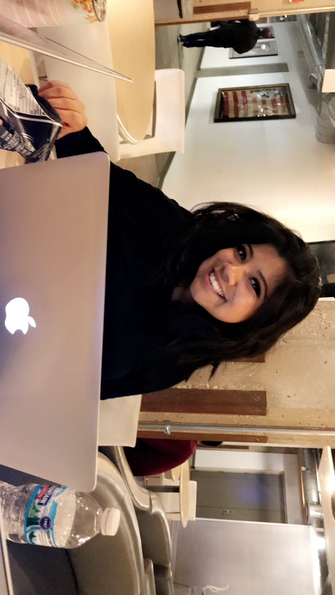

Senior at DePaul studying computer science with a minor in Mandarin Chinese.
I am experienced in web design, full stack development,
data structures, and product development.
- Skills
-
Languages
English, Spanish, Mandarin Chinese
Computer Languages
Python, Java, C+, Javascript
- Education
-
DePaul University Expected Graduation Date: Spring 2020
Major: Computer Science
Minor: Mandarin Chinese Language
- Experience
-
Tempus Labs Operations Intern | Chicago, IL - August 2017- current
- Create Pythons scripts to automated report and portal visiblity
- Upload raw DNA data to AWS buckets via Ruby script
- Accession tumor samples and evaluate its tumor content to pass sequencing
Freelance Web Designer self | Chicago, IL September 2016- current
- Worked on grass-roots promotional campaigns
- Reduced theft and property damage percentages
- Janitorial work, Laundry
- Volunteer
-
The Field Museum Teen and Adult Volunteer | Chicago, IL May 2015- current
- Faciliate stories to explain the specimen and artifacts of the museum
- References
- Paras Adhikary @ (312) 638-4550
- Alexa Valencia @ (773) 951-7579